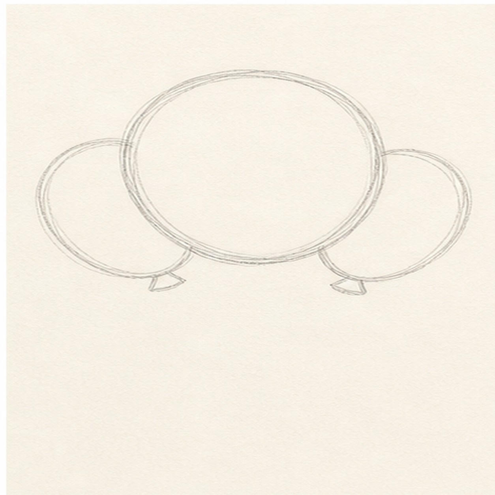
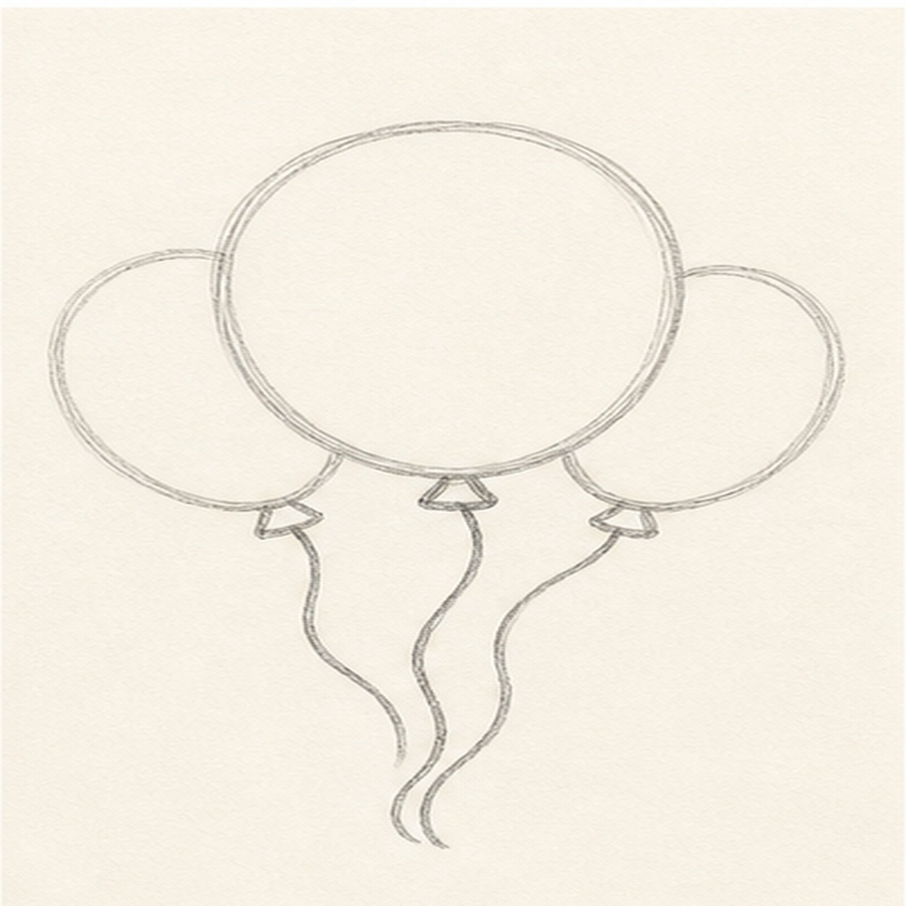
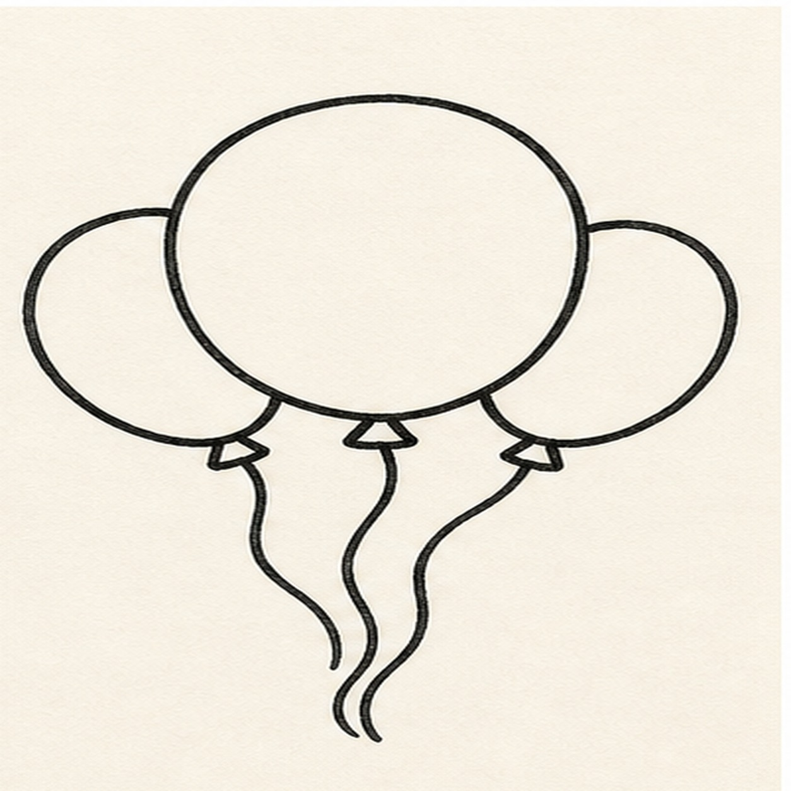
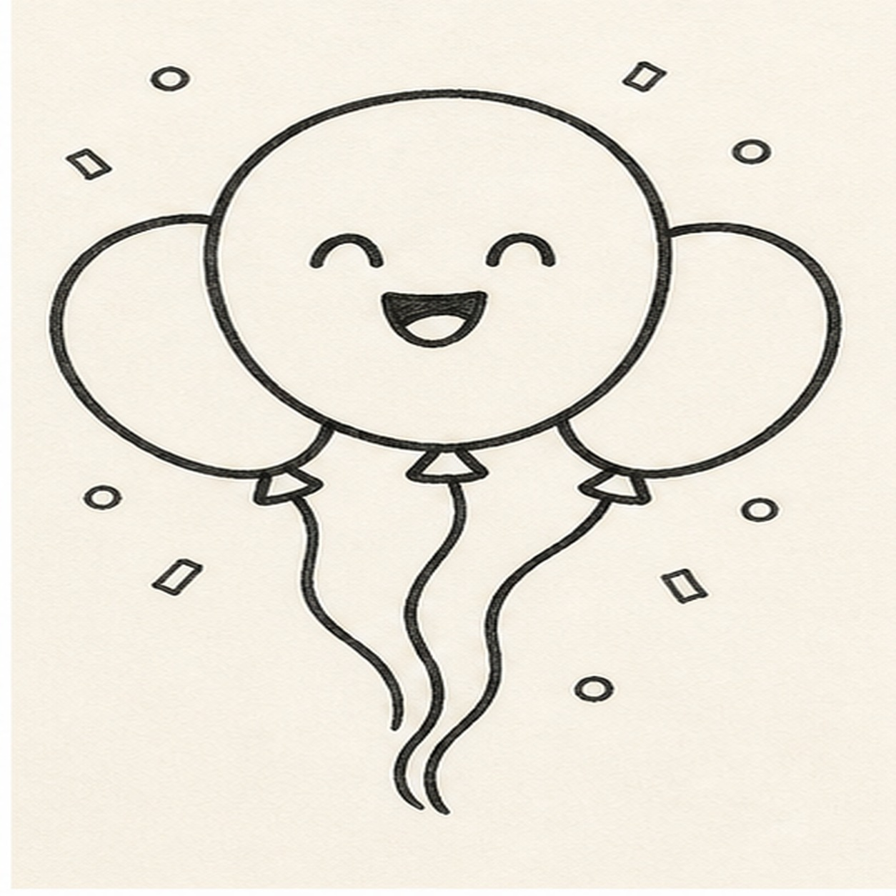
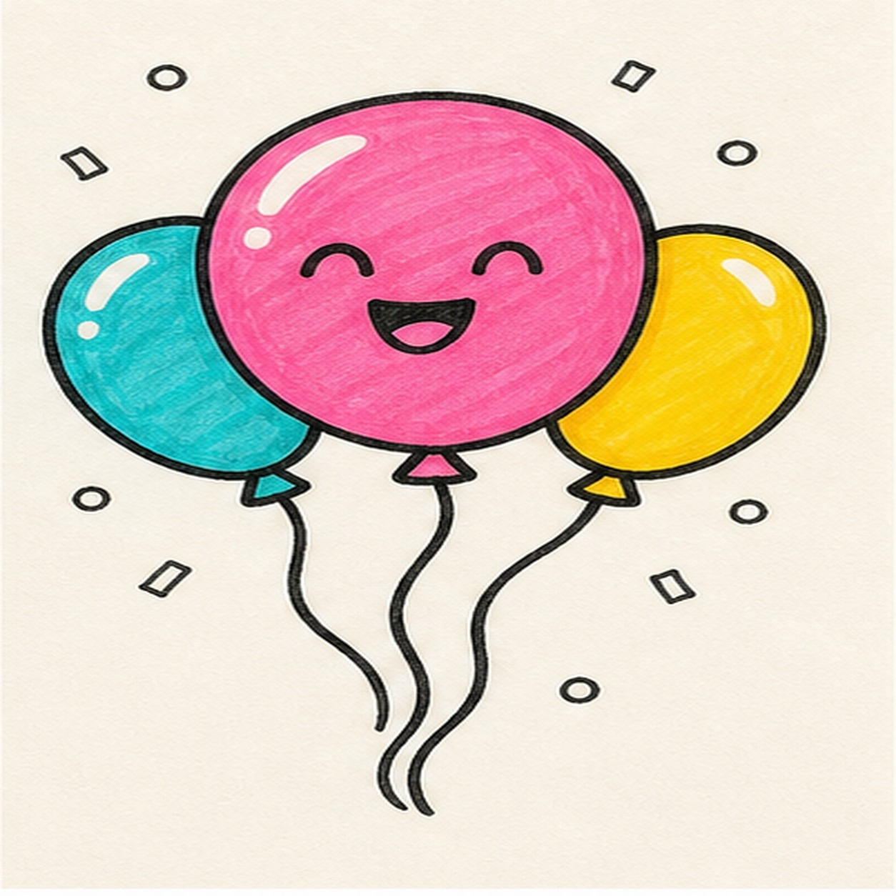

Felt-tip marker mode
Let's doodle cartoon party balloons
Treat this as one playful practice round: sketch the idea loosely, simplify the shapes, then commit with confident marker outlines and bright fills.
-
01

Float the balloons
Draw one large round balloon in the middle, then tuck two smaller balloons behind it on the sides.
Doodle tip: Overlap the side balloons a little. The cluster looks more like a bunch when the circles touch.
-
02

Tie the strings
Add small knot shapes under each balloon and pull curved strings down from the knots.
Doodle tip: Let the strings wiggle instead of hanging perfectly straight. That keeps the doodle lively.
-
03

Ink the bunch
Trace the balloon edges, knots, and strings with a thick black marker outline.
Doodle tip: Ink only the shapes you already drew. This step should make the bunch bolder, not redesign it.
-
04

Add party faces
Put a happy face on the main balloon, then scatter a few simple dots and dash-shaped confetti marks around the bunch.
Doodle tip: Keep the confetti outside the balloons so the big colored shapes stay easy to read.
-
05

Color the bunch
Fill the balloons with bright marker color and leave small highlight gaps on the rounded sides.
Doodle tip: Use different colors for the side balloons. The contrast helps the overlap stay clear.
-
06
Pop the party finish
Retrace the existing outlines, deepen the balloon fills, and sharpen the face, strings, confetti, and highlights already on the page.
Doodle tip: A few confetti marks are enough. The balloons should still be the star of the doodle.